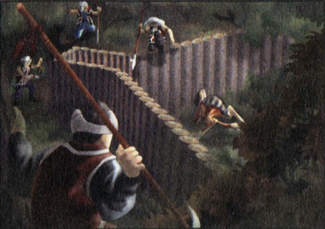
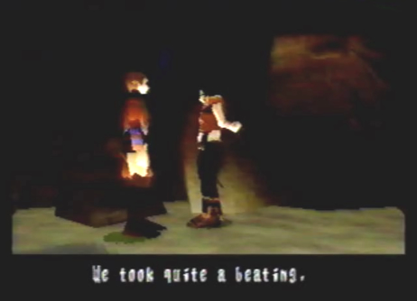

Enemies
Encountered/(None) |
|
Diary Entry 28: Seekers' Stronghold Visit 2 Azel's Disappearance Upon returning to the Seekers' Stronghold, it was quite clear that the seekers had suffered great loses. Bodies wrapped in blankets, were strung out on the cold floor, near the entrance of the stronghold. Even more surprising, Ladha told me that Azel was gone! As I made my way to the upper floor clearing, I ran into Gash. He asked me if I had heard about Azel's disappearance. I answered yes. He said it was all his fault, since he had been gone. I asked him, where in the world could she have run off to? He told me she was the key that opens the Tower, and that she most certainly knew we wanted to go there. I told him I'd go look for her as soon as possible. While on the upper floor, I checked up on Jared and restocked on supplies. He was busy making antidotes for the injured seekers. Moving down to the lower floor, I noticed part of the cave wall was partially destroyed, blocking the way to the grain storeroom. Rhagg told me to look around, they had taken quite a beating. "I guess Azel figured out why we were protecting her," she said. Next, I found Paet in Simeon and Reuben's room. "I almost got killed out there," he exclaimed. He told me he never knew how dangerous the monsters could be. He had seen the monsters many times with his Geo-Scan photographs, but never up close and personal. I asked him what he was going to do now. He said he didn't know, since he had never been outside of Zoah before. I made the suggestion to join the seekers. He immediately refused. I told him he and the seekers were alike, both driven from their lands. And of course, I told him he was highly skilled and could help many people. The seekers were surely aware of his potential, I said. He eventually agreed with me and started to perk up. I said good-bye and left him in peace. I then found Simeon and Reuben in the spare medical room. Eavesdropping on their conversation, I learned that Reuben had failed his first mission. He lay injured on a medical bed. Simeon couldn't believe that Azel was gone. I still couldn't put my finger on where exactly, Azel could have went, so I went to have a talk with Zadoc. He told me she was probably headed for Uru. He went on to tell me that Uru was the origin of our world, and the homeland of the drones. He was talking about the drone plant, found below the Underground Ruins of Uru. She had to have gone there! I thanked him for his help, and immediately departed for the Underground Ruins of Uru to find Azel.  |
|
| Divine
Overview |
1. Once you arrive back at the Seekers' Stronghold, you'll find Ladha standing near the seeker casualties. She will tell you that Azel is gone. |
|
2. Gash will be standing around on the upper floor. He will tell you that the situation of Azel's disappearance, was all his fault. Edge tells him he'll start looking for her right away. Where did she go? |
|
3. If you talk to Jared, he'll tell you he's currently making antidotes for the injured seekers. |
 4. You'll find Rhagg on the bottom floor. She'll give you her opinion on why she thinks Azel left. |
|
5. Paet can be found in Simeon and Reuben's room. Edge instills some confidence in him. |
6. Also on the bottom floor, you can eavesdrop on Simeon and Reuben, found in the spare medical room. Reuben has failed his first mission, and lays injured on the medical bed. Simeon can't believe Azel has left the stronghold. |
|
7. If you talk to Zadoc, and ask him about Azel, he will tell you that she went to the Underground Ruins of Uru. |
|
8. Before going to the Underground Ruins of Uru, note the crashed airship at the caravan. Talk to An'jou at night. You'll learn that unfortunately, Bezer's reckless move costs him his life. |
|
9. Hurry and go After Azel. She can be found at the Underground Ruins of Uru. |